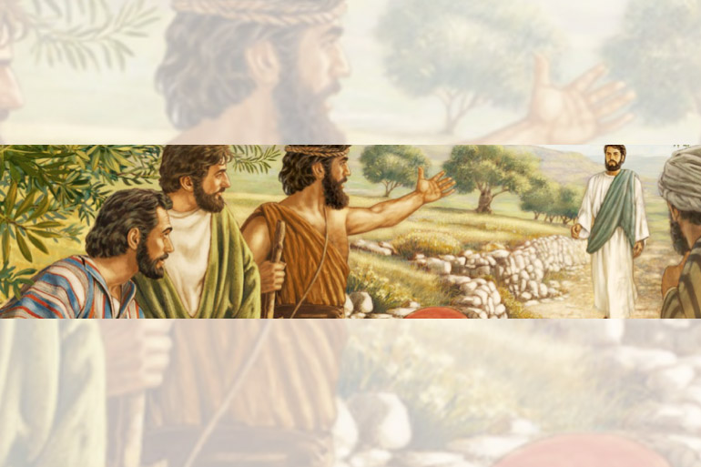

Leitura Orante
Leituras do Dia
STerça-feira - Santos Arcanjos
Miguel, Gabriel e Rafael
(Verde -Ofício da memória)
29 de setembro de 2020


Oração do dia
Ó Deus, que organizais de modo admirável o serviço dos anjos e dos homens, fazei sejamos protegidos na terra
por aqueles que vos servem no céu. Por Nosso Senhor Jesus Cristo, Vosso Filho, na unidade do Espírito Santo.
Leitura: Daniel 7,9-10.13-14
9Eu continuava olhando, até que foram colocados uns tronos, e um ancião de muitos dias aí tomou lugar. Sua veste era branca como neve e os cabelos da cabeça, como lã pura; seu trono eram chamas de fogo, e as rodas do trono, como fogo em brasa. 10Derramava-se aí um rio de fogo que nascia diante dele; serviam-no milhares de milhares, e milhões de milhões assistiam-no ao trono; foi instalado o tribunal, e os livros foram abertos. 13Continuei insistindo na visão noturna, e eis que, entre as nuvens do céu, vinha um como filho de homem, aproximando-se do Ancião de muitos dias, e foi conduzido à sua presença. 14Foram-lhe dados poder, glória e realeza, e todos os povos, nações e línguas o serviam: seu poder é um poder eterno que não lhe será tirado, e seu reino, um reino que não se dissolverá. – Palavra do Senhor.
Salmo Responsorial: 137(138)
Perante os vossos anjos, vou cantar-vos, ó Senhor!
Ó Senhor, de coração eu vos dou graças, porque ouvistes as palavras dos meus lábios! Perante os vossos anjos vou cantar-vos e ante o vosso templo vou prostrar-me.
Perante os vossos anjos, vou cantar-vos, ó Senhor!
Eu agradeço vosso amor, vossa verdade, porque fizestes muito mais que prometestes; naquele dia em que gritei, vós me escutastes e aumentastes o vigor da minha alma.
Perante os vossos anjos, vou cantar-vos, ó Senhor!
Os reis de toda a terra hão de louvar-vos quando ouvirem, ó Senhor, vossa promessa. Hão de cantar vossos caminhos e dirão: “Como a glória do Senhor é grandiosa!”
Perante os vossos anjos, vou cantar-vos, ó Senhor!
Evangelho: João 1,47-51
Naquele tempo, 47Jesus viu Natanael, que vinha para ele, e comentou: “Aí vem um israelita de verdade, um homem sem falsidade”. 48Natanael perguntou: “De onde me conheces?” Jesus respondeu: “Antes que Filipe te chamasse, enquanto estavas debaixo da figueira, eu te vi”. 49Natanael respondeu: “Rabi, tu és o Filho de Deus, tu és o rei de Israel”. 50Jesus disse: “Tu crês porque te disse: ‘Eu te vi debaixo da figueira’? Coisas maiores que essa verás!” 51E Jesus continuou: “Em verdade, em verdade, eu vos digo, vereis o céu aberto e os anjos de Deus subindo e descendo sobre o Filho do Homem”. – Palavra da Salvação.
Leituras do mês
TAGS
missao Amazonia evengel covid-19 indigenas novica papa francisco
Destaques
Província Stella Matutina
Rua São Benedito, 2146 - Santo Amaro - São Paulo - SP |
Tel. (11)
5547-7222


Província Spiritus Divinae Sapientiae
Rua Arnaldo Janssen, 320 - Cara-Cara - Ponta Grossa - PR |
Tel. (42) 3326 4091